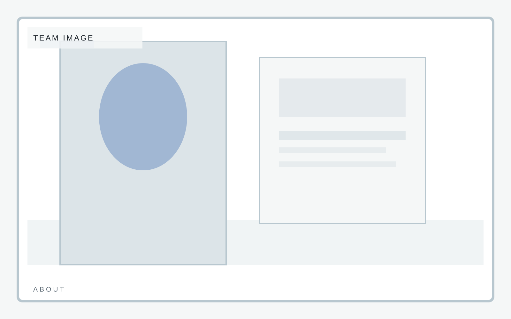

Launch pace
Ship inside two weeks
Fast-launch company site
A compact brochure template with disciplined spacing, clear positioning, and enough personality to avoid the usual interchangeable startup landing page. Believability beats grandiosity.
Fast-launch company site
The story section should create belief with very little copy. It is a launch page, not a memoir.
Managing Partner
Operating Principal
Portfolio Strategy

Fast-launch company site
Team framing needs enough structure to feel credible without pretending the company is larger than it is.